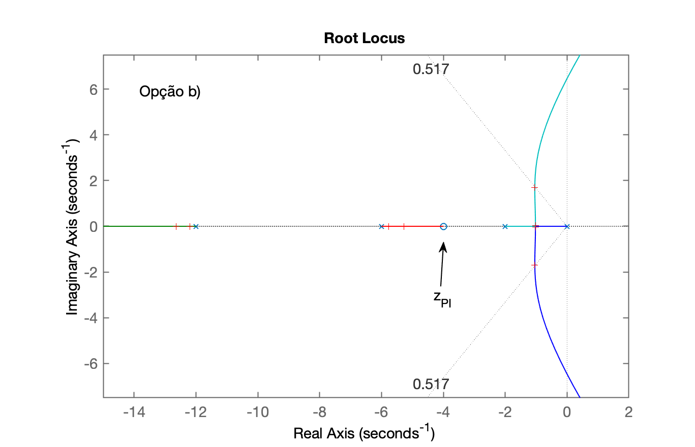
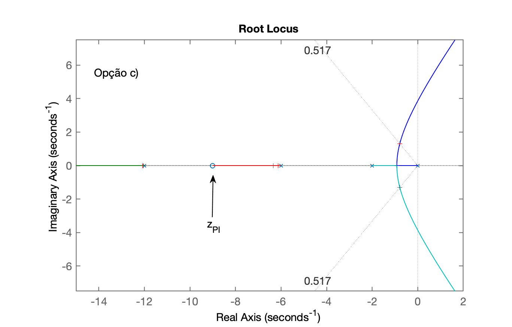
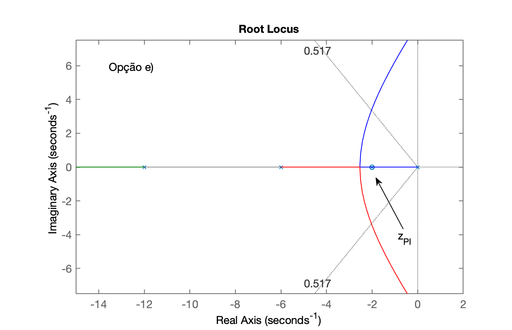
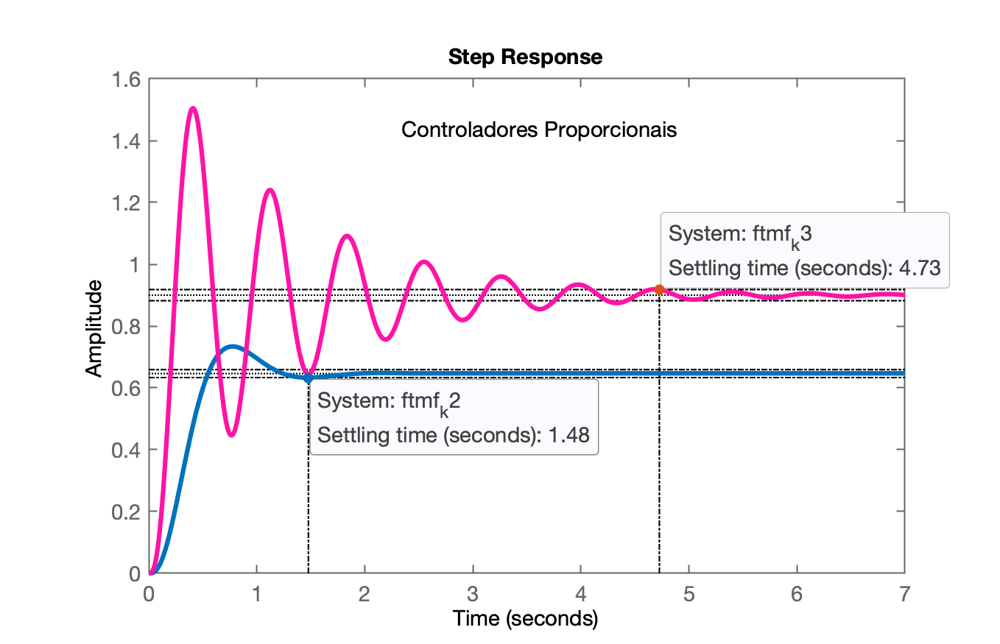
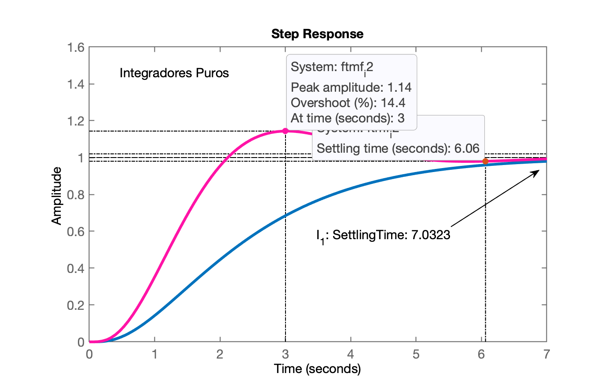
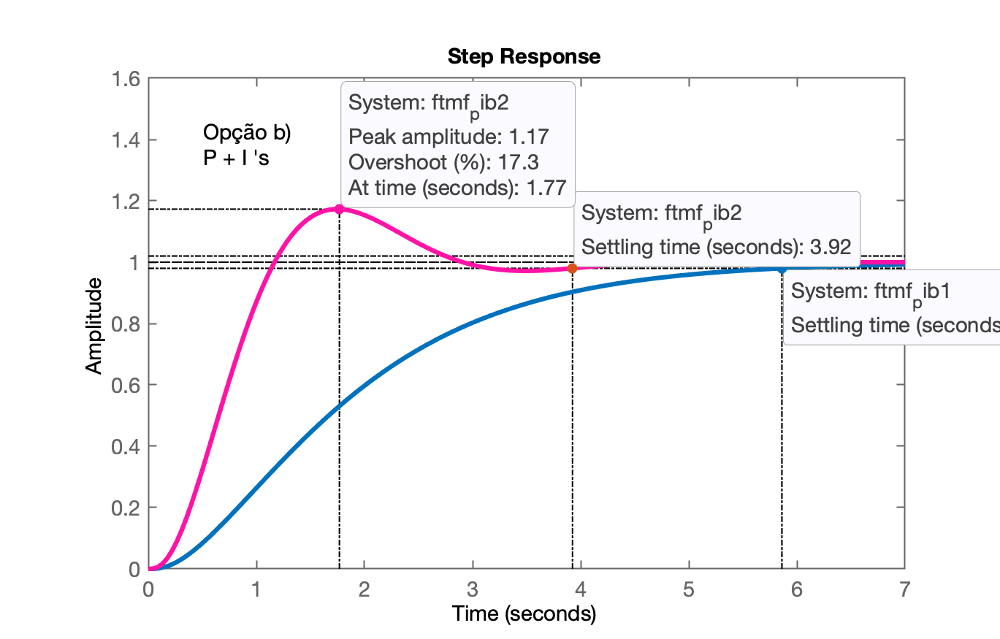
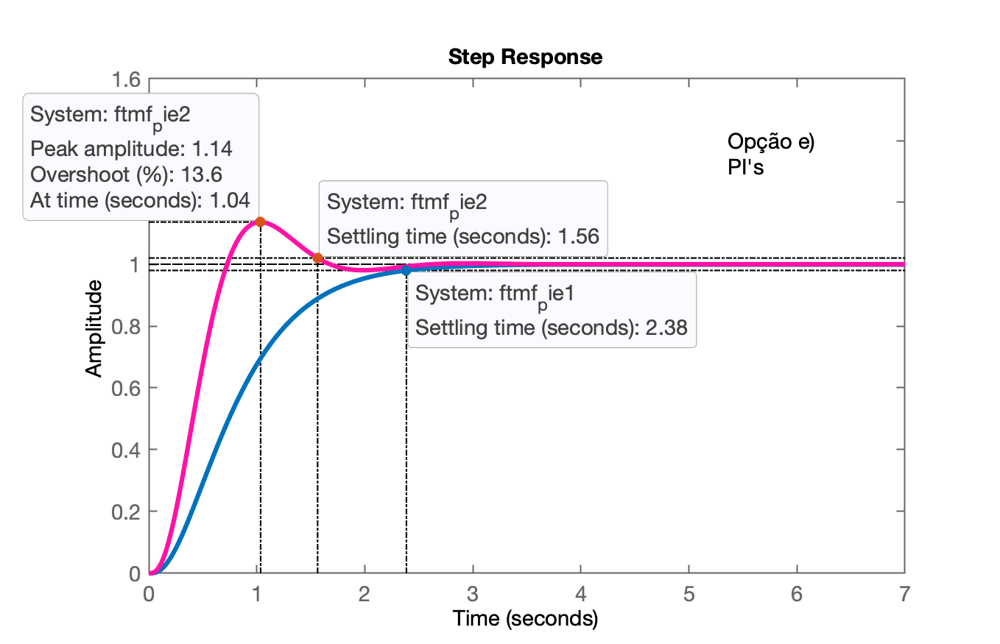

Projeto de Controladores Usando Root Locus
Aula de 14/05/2026, continuação da aula de 07/05/2026.
🎵.
Recuperando dados da seção de trabalho anterior (arquivo planta.mat):
>> what
MAT-files in the current folder /Volumes/DADOS/Users/fpassold/Documents/UPF/Sistemas de Controle/2026_1/Matlab
planta Ok, o arquivo planta.mat é o que contêm as variávreis acumuladas das seções de trabalho.
>> load planta % recuperando os dados da seção de trabalho anterior>> diary aula_140502026.txt % criando novo diárioProjeto de PI
Usando método do "chute científico".
Equação do PI:
onde:
existe um pólo na origem (em
existe um zero:
Incógnitas e observações:
O ganho
falta definir a posição do zero do PI (
Lembrando da eq. da planta:
>> zpk(G)
ans = 72 ------------------ (s+12) (s+6) (s+2) Continuous-time zero/pole/gain model.Adicionando a eq. da planta com a eq. do controlador, no plano-s teremos algo como:
Plano-s: ^jw | (d) (c) (b) (a) | <--o---x---o----x---o---x---o---x-----∞ -12 -6 -2 | 𝜎 | |Podemos alocar o zero do PI entre os pólos da planta, implicando nas opções:
a) pólo em:
Cada opção rende um novo traçado no RL. A idéia é esboçar como ficaria o RL para cada uma das opções, incluir a linha guia referente à
Analisando os RLs obtidos, as opções que parecem ser as mais promissoras são a: (b) e (c) e eventualmente poderíamos considerar a opção (e) (zero do PI exatamente sobre o pólo mais lento da planta). Esta opção realiza um cancelamento pólo-zero (ao menos na teoria), reduz a complexidade (ordem) do sistema de 4a-ordem para 3a-ordem e (pelo traçado do RL) renderia o PI mais rápido para esta planta.
PI: Avaliando Opções (b), (c) e (e)
Localizando o zero do PI em:
>> (6+2)/2 % arbitrando uma opção para este zero (simples média aritmética)ans = 4>> PIb = tf ( [1 -4] , [1 0] )
PIb = s - 4 ----- s Continuous-time transfer function.
>> % Ops... Notamos que criamos um zero "instável" (no semi-plano real positivo do plano-s; erro)>> PIb = tf ( [1 4] , [1 0] )
PIb = s + 4 ----- s Continuous-time transfer function.
>> ftma_pib = PIb * G;>> zpk(ftma_pib)
ans = 72 (s+4) -------------------- s (s+12) (s+6) (s+2) Continuous-time zero/pole/gain model.
>> rlocus(ftma_pib)>> axis([-20 4 -15 15])>> hold on; sgrid(zeta,0)Vamos aproveitar e levantar o RL das outras opções:
>> PIc = tf ( [1 9] , [1 0] )
PIc = s + 9 ----- s Continuous-time transfer function.
>> ftma_pic = PIc * G;>> figure; rlocus(ftma_pic)>> hold on; sgrid(zeta,0)>> axis([-20 4 -15 15])>> >> PIe = tf ( [1 2] , [1 0] )
PIe = s + 2 ----- s Continuous-time transfer function.
>> ftma_pie = PIe * G;>> figure; rlocus(ftma_pie)>> hold on; sgrid(zeta,0)>> % Definindo o mesmo "range" para todos os gráficos de RL:>> axis([-20 4 -15 15])>> axis([-15 2 -7.5 7.5])>> % Aplicando o mesmo range nos 3 RLs (gráficos) plotados>> figure(1); axis([-15 2 -7.5 7.5])>> figure(2); axis([-15 2 -7.5 7.5])>> figure(3); axis([-15 2 -7.5 7.5])Temos então:
| RL PI, Opção (b) | RL PI, Opção (c) | RL PI, Opção (a) |
|---|---|---|
 |  |  |
Sintonizando cada PI... Lembrar de 2 critérios temporais:
resposta criticamente amortecida (sem overshoot), mas a mais rápida possível;
resposta sub-amortecida (aceita overshoot de até 15%).
>> % PI (b)>> figure(1)>> [K_pib,polosMF]=rlocfind(ftma_pib) % sem overshootSelect a point in the graphics windowselected_point = -1.0272 - 0.023148iK_pib = 0.25487polosMF = -12.195 + 0i -5.7609 + 0i -1.0219 + 0.022548i -1.0219 - 0.022548i>> [K_pib2,polosMF]=rlocfind(ftma_pib) % com overshoot 15%Select a point in the graphics windowselected_point = -1.0272 + 1.6898iK_pib2 = 0.91319polosMF = -12.637 + 0i -5.2776 + 0i -1.0429 + 1.6899i -1.0429 - 1.6899i>> >> % Fechando a malha>> >> K_pib1=0.25; % ganho sem overshoot>> K_pib2=1.0; % ganho sem overshoot>> >> ftmf_pib1 = feedback(K_pib1*ftma_pib, 1);>> pole(ftmf_pib1)ans = -12.192 -5.7652 -1.1602 -0.88294>> >> ftmf_pib2 = feedback(K_pib2*ftma_pib, 1);>> >> figure; step(ftmf_pib1, ftmf_pib2)>> % Levantando outro gráfico comparando com resposta de Controladores Proporcionais:>> figure; step(ftmf_k2, ftmf_k3)>> % Levantando outro gráfico comparando com Integradores Puros>> figure; step(ftmf_i1, ftmf_i2)Obtemos as seguintes respostas para entrada (referência) degrau unitário:
| Controlador Proporcional | Integradores Puros | PIs (b) e (c) |
|---|---|---|
 |  |  |
Observe os 3 gráficos e repare como cada controlador se comporta.
Resumindo:
Controlador Proporcional não zera erro em regime permanente, mas, serve como "referência" para o projeto de outros controladores;
Ação Integral Pura zera erro em regime permanente, mas atrasa consideravelmente a resposta do sistema;
Controlador PI (Proporcional + Integral) zera o erro de regime permanente sem comprometer tanto o atraso na resposta do sistema.
Falta sintonizar os outros PI's
>> figure(2); % foco no RL do PI(c)>> [K_pic1,polosMF]=rlocfind(ftma_pic) % sem overshootSelect a point in the graphics windowselected_point = -0.92455K_pic1 = 0.09613polosMF = -12.029 -6.1334 -0.92455 -0.91323>> [K_pic2,polosMF]=rlocfind(ftma_pic) % com overshoot 15%>> figure(2) % garantir foco na janela com RL correspondente>> [K_pic2,polosMF]=rlocfind(ftma_pic) % com overshoot 15%Select a point in the graphics windowselected_point = -0.78773 + 1.3003iK_pic2 = 0.27375polosMF = -12.082 + 0i -6.3372 + 0i -0.7904 + 1.3008i -0.7904 - 1.3008i>> >> % fechando as malhas>> >> ftmf_pic1 = feedback(K_pic1*ftma_pic, 1); % sem overshoot, opção c>> ftmf_pic2 = feedback(K_pic2*ftma_pic, 1); % com overshoot, opção c>> figure; step(ftmf_pic1, ftmf_pic2)>> >> % PI mais rápido...>> >> % sintonizando...>> >> figure(3)>> [K_pie1,polosMF]=rlocfind(ftma_pie) % sem overshoot, opção eSelect a point in the graphics windowselected_point = -2.5437K_pie1 = 1.1547polosMF = -12.928 -2.5437 -2.5281 -2>> [K_pie2,polosMF]=rlocfind(ftma_pie) % com overshoot, opção eSelect a point in the graphics windowselected_point = -2.0254 + 3.2972iK_pie2 = 2.9158polosMF = -13.909 + 0i -2.0457 + 3.3029i -2.0457 - 3.3029i -2 + 0i>> >> % Fechando a malha...>> >> ftmf_pie1 = feedback(K_pie1*ftma_pie, 1); % sem overshoot, opção e>> ftmf_pie2 = feedback(K_pie2*ftma_pie, 1); % sem overshoot, opção e>> figure; step(ftmf_pie1, ftmf_pie2)Resultados obtidos para PI mais rápido (opção (e)):

Compare com os outros resultados obtidos e coonfirme que este seria o PI mais rápido possível de ser realizado para esta planta.
Encerrando seção de trabalho
xxxxxxxxxx>> save planta % salvando os novos dados>> diary off % fechando arquivo diary que estava sendo gerado>> quitFernando Passold, em 21/05/2026.